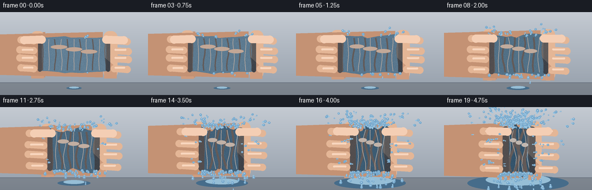
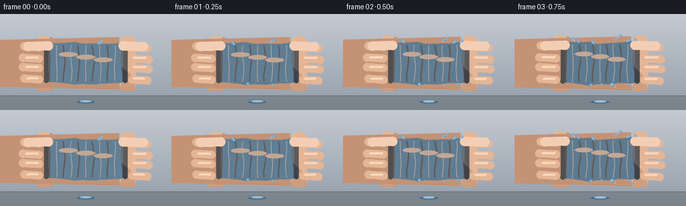

CODING AGENTS AS PIXEL WORLD MODELS
traex/Seed-2.1-Pro-0915 · phygen_015
点击播放 · 原生 RGB 像素
逐轮保存的候选
回放视频、检查图与代码变化。
每份候选均可单独播放。实际图片检查记录在下方工具轨迹中。
候选 01播放与检查图
点击播放 · 原生 RGB 像素


展开代码变化
--- 上一保存版本
+++ 本次保存版本
@@ -0,0 +1,316 @@
+"""Procedural t2v: timelapse of a water-soaked cloth squeezed by two hands.
+
+Renders 20 RGB frames (256x144, 4 fps) entirely with numpy + PIL:
+supersampled drawing, animated cloth compression/folds, hand grip,
+gravity-driven water particles, and a growing puddle.
+"""
+from pathlib import Path
+import math
+
+import numpy as np
+from PIL import Image, ImageDraw
+
+import artifact_io
+
+W, H, N, FPS = 256, 144, 20, 4.0
+SS = 3 # supersampling factor
+SW, SH = W * SS, H * SS
+
+rng = np.random.default_rng(20261111)
+
+# Fixed noise profiles so cloth irregularity stays coherent across frames.
+EDGE_NOISE = rng.uniform(-1, 1, 24)
+FOLD_NOISE = rng.uniform(-1, 1, 11)
+
+
+def s(v):
+ """Scale target-space coordinate to supersampled space."""
+ return v * SS
+
+
+def capsule(draw, p1, p2, r, fill):
+ """Draw a thick line with round caps."""
+ x1, y1 = p1
+ x2, y2 = p2
+ width = max(1, int(round(2 * r * SS)))
+ draw.line([(s(x1), s(y1)), (s(x2), s(y2))], fill=fill, width=width)
+ rr = r * SS
+ draw.ellipse([s(x1) - rr, s(y1) - rr, s(x1) + rr, s(y1) + rr], fill=fill)
+ draw.ellipse([s(x2) - rr, s(y2) - rr, s(x2) + rr, s(y2) + rr], fill=fill)
+
+
+def lerp(a, b, t):
+ return a + (b - a) * t
+
+
+def cloth_geometry(t, p):
+ """Compressing cloth: center, size, wavy boundary, fold positions."""
+ cx, cy = W / 2, 74
+ cw = lerp(118, 46, p)
+ ch = lerp(60, 80, p)
+ # Pressure tremor.
+ cx += float(rng.normal(0, 0.25 + 1.4 * p))
+ cy += float(rng.normal(0, 0.15 + 0.7 * p))
+
+ half_w, half_h = cw / 2, ch / 2
+ wave_amp = 2.5 + 6.5 * p
+ xs = np.linspace(-half_w, half_w, 12)
+ top, bottom = [], []
+ for i, x in enumerate(xs):
+ phase = (x / max(half_w, 1)) * (3.0 + 4.0 * p)
+ n = EDGE_NOISE[i % len(EDGE_NOISE)]
+ wobble = math.sin(phase + t * 6.0) * wave_amp * 0.6 + n * wave_amp * 0.45
+ top.append((cx + x, cy - half_h + wobble))
+ wobble_b = math.sin(phase + 1.7 + t * 5.0) * wave_amp * 0.6 - n * wave_amp * 0.4
+ bottom.append((cx + x, cy + half_h + wobble_b))
+ boundary = top + list(reversed(bottom))
+
+ folds = []
+ for k in range(11):
+ xn = -0.92 + 1.84 * k / 10
+ folds.append({
+ "x": cx + xn * half_w,
+ "sway": FOLD_NOISE[k] * (2 + 5 * p),
+ "dark": k % 2 == 0,
+ })
+ return cx, cy, cw, ch, boundary, folds
+
+
+def draw_background(img):
+ """Soft neutral wall gradient with a floor band."""
+ grad = np.zeros((SH, SW, 3), dtype=np.float32)
+ for y in range(SH):
+ ty = y / SH
+ grad[y, :, 0] = lerp(196, 148, ty)
+ grad[y, :, 1] = lerp(202, 158, ty)
+ grad[y, :, 2] = lerp(210, 170, ty)
+ floor_y = int(s(122))
+ grad[floor_y:, :, :] *= 0.82
+ img.paste(Image.fromarray(grad.astype(np.uint8)), (0, 0))
+ draw = ImageDraw.Draw(img, "RGBA")
+ draw.rectangle([0, floor_y, SW, floor_y + int(s(1.2))], fill=(110, 118, 130, 120))
+
+
+def draw_puddle(img, width):
+ draw = ImageDraw.Draw(img, "RGBA")
+ cx, cy = W / 2, 132
+ h = max(3, width * 0.16)
+ draw.ellipse([s(cx - width / 2), s(cy - h / 2), s(cx + width / 2), s(cy + h / 2)],
+ fill=(70, 108, 138, 110))
+ draw.ellipse([s(cx - width * 0.32), s(cy - h * 0.55), s(cx + width * 0.32), s(cy + h * 0.15)],
+ fill=(150, 190, 214, 90))
+
+
+SKIN = (228, 182, 150, 255)
+SKIN_SHADOW = (196, 146, 116, 255)
+SKIN_LIGHT = (244, 206, 180, 255)
+
+
+def draw_hand(draw, side, hx, cy, ch, grip):
+ """side=-1 left hand (fingers point right), side=1 mirrored right hand."""
+ d = side
+ palm_w, palm_h = 24, ch + 22
+ px = hx - d * 4
+ arm = [
+ (d * -30, cy - palm_h * 0.42),
+ (px - d * palm_w * 0.55, cy - palm_h * 0.48),
+ (px - d * palm_w * 0.55, cy + palm_h * 0.48),
+ (d * -30, cy + palm_h * 0.42),
+ ]
+ draw.polygon([(s(x), s(y)) for x, y in arm], fill=SKIN_SHADOW)
+ x0, x1 = px - d * palm_w / 2, px + d * palm_w / 2
+ draw.rounded_rectangle([s(min(x0, x1)), s(cy - palm_h / 2),
+ s(max(x0, x1)), s(cy + palm_h / 2)],
+ radius=int(s(10)), fill=SKIN)
+ shade = [
+ (px - d * palm_w * 0.45, cy + palm_h * 0.05),
+ (px + d * palm_w * 0.45, cy + palm_h * 0.28),
+ (px + d * palm_w * 0.45, cy + palm_h * 0.5),
+ (px - d * palm_w * 0.45, cy + palm_h * 0.5),
+ ]
+ draw.polygon([(s(x), s(y)) for x, y in shade], fill=(206, 156, 126, 130))
+ span = ch * 0.78
+ for k in range(4):
+ fy = cy - span / 2 + span * k / 3 + (0.8 if k % 2 else -0.8)
+ length = 22 + grip * 6 + (2 if k in (1, 2) else 0)
+ p1 = (px + d * palm_w * 0.28, fy)
+ p2 = (px + d * (palm_w * 0.28 + length), fy + d * 1.5)
+ capsule(draw, p1, p2, 6.2, SKIN)
+ capsule(draw, (p1[0] + d * 2, fy - 1.6), (p2[0] - d * 5, fy - 1.6), 1.6,
+ (248, 214, 190, 160))
+ t1 = (px - d * palm_w * 0.3, cy - palm_h * 0.32)
+ t2 = (px + d * (palm_w * 0.55 + 10), cy - ch * 0.42)
+ capsule(draw, t1, t2, 7.0, SKIN_LIGHT)
+
+
+def draw_cloth(base_img, geom, p, t):
+ cx, cy, cw, ch, boundary, folds = geom
+ layer = Image.new("RGBA", (SW, SH), (0, 0, 0, 0))
+ ld = ImageDraw.Draw(layer)
+
+ wet = p
+ base_col = (
+ int(lerp(98, 52, wet)),
+ int(lerp(128, 84, wet)),
+ int(lerp(150, 108, wet)),
+ 255,
+ )
+ pts = [(s(x), s(y)) for x, y in boundary]
+ ld.polygon(pts, fill=base_col)
+
+ half_w, half_h = cw / 2, ch / 2
+
+ # Vertical fold shading: dark creases and wet highlights.
+ for fold in folds:
+ fx = fold["x"]
+ sway = fold["sway"]
+ top_y = cy - half_h + 3
+ bot_y = cy + half_h - 3
+ path = []
+ for j in range(7):
+ v = j / 6
+ x = fx + math.sin(v * math.pi * 2 + fx * 0.15 + t * 4) * sway
+ y = lerp(top_y, bot_y, v)
+ path.append((s(x), s(y)))
+ if fold["dark"]:
+ ld.line(path, fill=(30, 52, 70, 150), width=max(1, int(s(2.2 + 2.5 * p))))
+ else:
+ ld.line(path, fill=(170, 200, 216, 110), width=max(1, int(s(1.3))))
+ # Edge darkening where the hands pinch.
+ for side in (-1, 1):
+ edge_x = cx + side * half_w
+ capsule(ld, (edge_x, cy - half_h + 4), (edge_x, cy + half_h - 4),
+ 3.5 + 2 * p, (26, 44, 60, 170))
+ # Glossy wet sheen.
+ for k in range(3):
+ gx = cx + (k - 1) * cw * 0.22
+ gy = cy - ch * 0.22 + k * 4
+ ld.ellipse([s(gx - cw * 0.12), s(gy - 3.5), s(gx + cw * 0.12), s(gy + 3.5)],
+ fill=(190, 218, 232, 70 + int(60 * p)))
+
+ # Fine surface noise confined to the cloth mask.
+ arr = np.asarray(layer).copy()
+ mask = arr[:, :, 3] > 0
+ noise = rng.normal(0, 7, (SH, SW)).astype(np.float32)
+ for c in range(3):
+ arr[:, :, c] = np.clip(arr[:, :, c].astype(np.float32) + noise, 0, 255)
+ arr[:, :, 3] = np.asarray(layer)[:, :, 3]
+ arr[~mask] = 0
+ layer = Image.fromarray(arr.astype(np.uint8), "RGBA")
+
+ base_img.alpha_composite(layer)
+
+
+def spawn_particles(particles, geom, p):
+ cx, cy, cw, ch, _, _ = geom
+ half_w, half_h = cw / 2, ch / 2
+ # Upward jets from the compressed top edge.
+ n_top = int(2 + 30 * p ** 2)
+ for _ in range(n_top):
+ x = cx + rng.uniform(-half_w * 0.85, half_w * 0.85)
+ y = cy - half_h + rng.uniform(-2, 2)
+ vx = rng.normal(0, 0.7 + 1.6 * p) + (x - cx) * 0.05
+ vy = -rng.uniform(1.8, 3.4 + 3.2 * p)
+ particles.append([x, y, vx, vy, rng.uniform(1.0, 2.4), "drop"])
+ # Drips from the soggy bottom.
+ n_bot = int(1 + 12 * p)
+ for _ in range(n_bot):
+ x = cx + rng.uniform(-half_w, half_w)
+ y = cy + half_h
+ particles.append([x, y, rng.normal(0, 0.35), rng.uniform(0.4, 1.6),
+ rng.uniform(1.2, 2.6), "drip"])
+ # Side spurts where fingers pinch.
+ if p > 0.35:
+ for side in (-1, 1):
+ for _ in range(int(3 * p)):
+ x = cx + side * half_w
+ y = cy + rng.uniform(-half_h * 0.7, half_h * 0.7)
+ particles.append([x, y, side * rng.uniform(1.2, 2.6 + 2 * p),
+ rng.normal(-0.6, 0.5), rng.uniform(0.9, 1.9), "drop"])
+
+
+def update_and_draw_particles(img, particles):
+ draw = ImageDraw.Draw(img, "RGBA")
+ alive = []
+ for q in particles:
+ q[1] += q[3]
+ q[0] += q[2]
+ q[3] += 0.16 if q[5] == "drop" else 0.22
+ x, y, vx, vy, r, kind = q
+ if y > H + 6 or x < -8 or x > W + 8:
+ continue
+ speed = math.hypot(vx, vy)
+ if speed > 1.6:
+ capsule(draw, (x - vx * 0.9, y - vy * 0.9), (x, y), r * 0.55,
+ (150, 196, 226, 200))
+ rr = r * SS
+ draw.ellipse([s(x) - rr, s(y) - rr, s(x) + rr, s(y) + rr],
+ fill=(118, 168, 204, 235))
+ draw.ellipse([s(x) - rr * 0.35, s(y) - rr * 0.4, s(x) + rr * 0.15, s(y)],
+ fill=(214, 236, 248, 200))
+ alive.append(q)
+ particles[:] = alive
+
+
+def render_frame(frame):
+ t = frame / (N - 1)
+ # Pressure ramps up rapidly, especially late.
+ p = t ** 1.25
+ geom = cloth_geometry(t, p)
+ cx, cy, cw, ch, _, _ = geom
+
+ img = Image.new("RGBA", (SW, SH), (0, 0, 0, 255))
+ draw_background(img)
+
+ cumulative = 2 + frame * (2 + 26 * p ** 2)
+ puddle_w = min(175, 26 + cumulative * 0.32)
+ draw_puddle(img, puddle_w)
+
+ draw = ImageDraw.Draw(img, "RGBA")
+ hx_left = cx - cw / 2 - 8
+ hx_right = cx + cw / 2 + 8
+ draw_hand(draw, -1, hx_left, cy, ch, p)
+ draw_hand(draw, 1, hx_right, cy, ch, p)
+
+ draw_cloth(img, geom, p, t)
+
+ # Fingers overlap the front of the cloth (grip wrapping around it).
+ draw = ImageDraw.Draw(img, "RGBA")
+ span = ch * 0.78
+ for side, hx in ((-1, hx_left), (1, hx_right)):
+ d = side
+ px = hx - d * 4
+ palm_w = 24
+ for k in range(4):
+ fy = cy - span / 2 + span * k / 3 + (0.8 if k % 2 else -0.8)
+ length = 22 + p * 6 + (2 if k in (1, 2) else 0)
+ p1 = (px + d * palm_w * 0.28, fy)
+ p2 = (px + d * (palm_w * 0.28 + length), fy + d * 1.5)
+ capsule(draw, p1, p2, 6.2, SKIN)
+ capsule(draw, (p1[0] + d * 2, fy - 1.6), (p2[0] - d * 5, fy - 1.6), 1.6,
+ (248, 214, 190, 160))
+ t1 = (px - d * palm_w * 0.3, cy - (ch + 22) * 0.32)
+ t2 = (px + d * (palm_w * 0.55 + 10), cy - ch * 0.42)
+ capsule(draw, t1, t2, 7.0, SKIN_LIGHT)
+
+ return img, geom, p
+
+
+def main():
+ frames = []
+ particles = []
+ for frame in range(N):
+ img, geom, p = render_frame(frame)
+ spawn_particles(particles, geom, p)
+ update_and_draw_particles(img, particles)
+ out = img.convert("RGB").resize((W, H), Image.LANCZOS)
+ frames.append(np.asarray(out, dtype=np.uint8))
+
+ frames = np.stack(frames, axis=0)
+ case_dir = Path(__file__).resolve().parent
+ artifact_io.save(frames, case_dir)
+ print("saved", frames.shape, "to", case_dir)
+
+
+if __name__ == "__main__":
+ main()
可观测工具轨迹
实际执行的命令与返回图片。
命令 1exit 0
/bin/bash -lc 'cat prompt.txt GENERATION_RULES.md task_spec.json'
命令 2exit 0
/bin/bash -lc 'ls -la'
命令 3exit 0
/bin/bash -lc 'cat artifact_io.py'
命令 4exit 0
/bin/bash -lc 'cd . && python generate.py'
命令 5exit 0
/bin/bash -lc "cd . && python - <<'EOF'
import numpy as np
from PIL import Image
d = np.load(\"pixels.npz\")[\"pixels\"] # h,w,20 packed
H,W,N = d.shape
frames = np.stack([((d[...,i]>>16)&255) for i in range(N)]), None
R = np.stack([(d[...,i]>>16)&255 for i in range(N)])
G = np.stack([(d[...,i]>>8)&255 for i in range(N)])
B = np.stack([d[...,i]&255 for i in range(N)])
rgb = np.stack([R,G,B],-1).astype(np.uint8)
print(\"shape\", rgb.shape)
# Water mask: bluish pixels with B notably > R
water = (B.astype(int) - R.astype(int) > 25) & (B > 120)
# Skin mask
skin = (R > 170) & (G > 120) & (R > B + 25)
# Cloth: mid blue-gray, darker than bg
cloth = (B > R) & (B < 170) & (R < 130) & ~water
for i in range(0, N, 4):
print(f\"f{i:02d} mean={rgb[i].mean():.1f} water={water[i].sum():5d} skin={skin[i].sum():5d} cloth={cloth[i].sum():5d}\")
print(\"final frame water:\", water[-1].sum(), \"first:\", water[0].sum())
# temporal diffs ensure motion every step
diffs = [np.abs(rgb[i].astype(int)-rgb[i-1].astype(int)).mean() for i in range(1,N)]
print(\"mean abs frame diffs:\", [round(x,2) for x in diffs])
# check water vertical spread (jets reaching upward) in last frame
ys, xs = np.where(water[-1])
print(\"last water y range:\", ys.min(), ys.max(), \"x range:\", xs.min(), xs.max())
ys0, _ = np.where(water[0])
print(\"first water y range:\", ys0.min() if len(ys0) else None, ys0.max() if len(ys0) else None)
EOF"保存候选 1 份；完成命令 5 次；可验证图片返回 0 张。原始 API 响应与完整日志保留在本地。